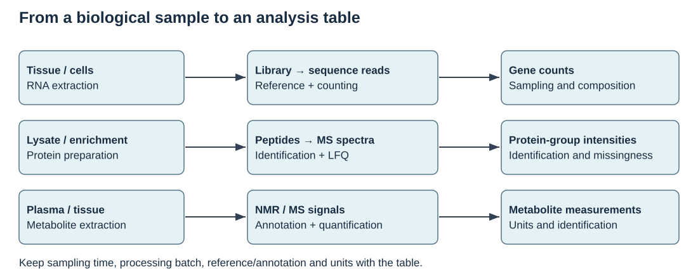
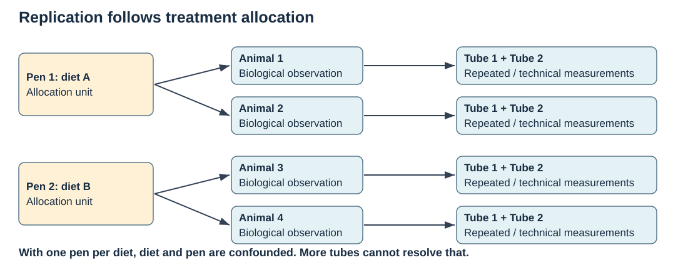
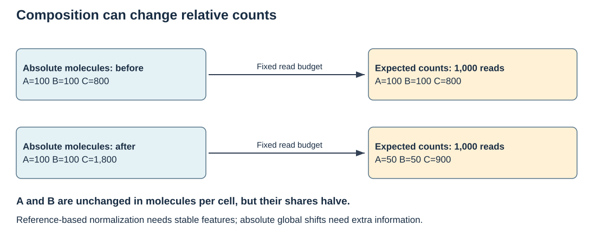
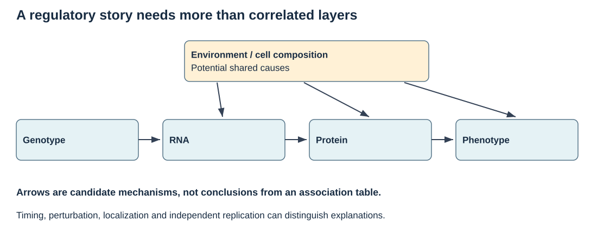
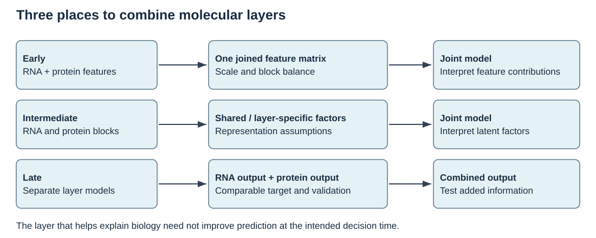
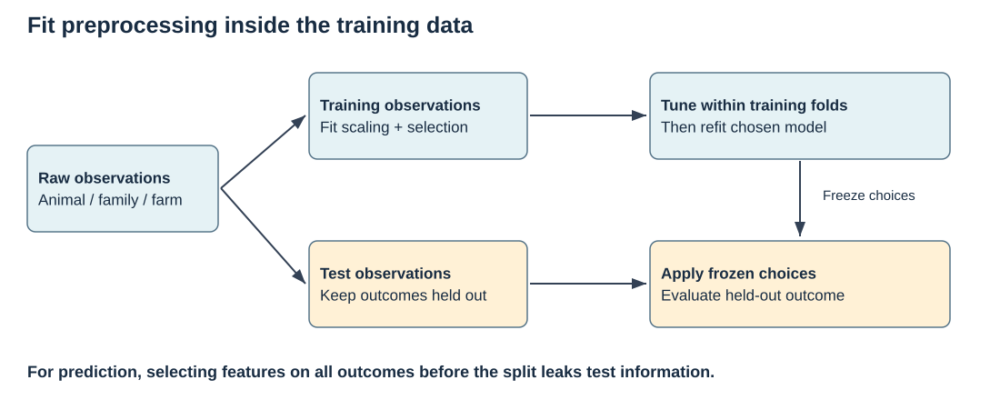

Visual guide to measurements and evidence
Use these original diagrams to explain an analysis before choosing software. Each figure includes a question, a suggested answer and links to the relevant lessons. SVG files can be enlarged without losing detail and have descriptive alternatives for readers using assistive tools.
What does the assay measure?

The three pipelines produce different quantities. A gene count is sequencing evidence assigned to an annotation; an LFQ value summarizes identified protein groups; a metabolite measurement depends on signal processing and compound assignment. Sampling and processing metadata belong with every table.
Explain it: Which part of the pipeline can turn an apparent biological difference into a measurement difference?
Different preparation batches, reference annotations or sample degradation can change the table. Name the stage and the diagnostic you would examine.
What is independently replicated?

In this hypothetical diagram, diet is assigned to pens. Animals and tubes are nested observations. One pen per diet cannot separate a diet effect from a pen effect. If allocation were instead independent at animal level, the design and appropriate unit would change.
Explain it: Does collecting two more tubes from each animal increase treatment replication?
It can improve measurement precision or permit a technical diagnostic, but it adds no independent allocation units. Replicate pens and record nesting.
Why is library size not the whole normalization problem?

This hypothetical fixed-budget calculation assumes reads are sampled in proportion to molecules. Increasing C changes every share even when A and B have unchanged absolute amounts. Stable-reference normalization can recover relative shifts under its assumptions; it cannot identify a universal per-cell RNA increase from relative counts alone.
Explain it: What extra measurement would help investigate a global shift in RNA per cell?
A suitable external reference or calibrated spike-in strategy, with known sampling and preparation, can supply information absent from relative counts. Its own technical assumptions still need checking.
What would establish a regulatory relationship?

The horizontal arrows are a candidate mechanistic story. The upper shared causes show why RNA, protein and phenotype can correlate without identifying that story. Feedback and measurement timing can complicate it further.
Explain it: If RNA and protein correlate, have you established RNA-mediated genetic control of the phenotype?
No. You need evidence that distinguishes shared causes, temporal ordering and the relevant perturbation. A measured correlation can support a follow-up hypothesis.
Where do we combine information?

Early, intermediate and late integration combine different objects. A representation learned across assays may explain shared variation, but its scale, missingness assumptions and intended use must be explicit. Predictive comparisons need the same held-out observations and target.
Explain it: Can a shared latent factor be interpreted as a biological pathway automatically?
No. Inspect its contributing features, batch/phenotype associations and stability; support a pathway claim with appropriate independent evidence.
When may the test set influence the model?

The split must represent the intended future use. Every fitted preprocessing step and tuning decision belongs within training; validation folds repeat those steps. The final test set receives frozen choices. Random animals from the same farm answer a different transfer question from a new farm.
Explain it: Why can fitting scaling or outcome-based feature selection before the split inflate accuracy?
It lets held-out observations influence fitted choices. Outcome-based selection is direct leakage; scaling also reveals properties of the held-out distribution. Fit each operation in the training fold and apply its stored parameters.
From a static figure to movement
For a first dynamic example, run the production–degradation model in B14: change the production rate, degradation rate and starting amount separately, then predict both the equilibrium and time to approach it before inspecting the curve. The media guide adds molecular animations and lectures on feedback. A useful animation should expose the biological assumptions as clearly as the movement.